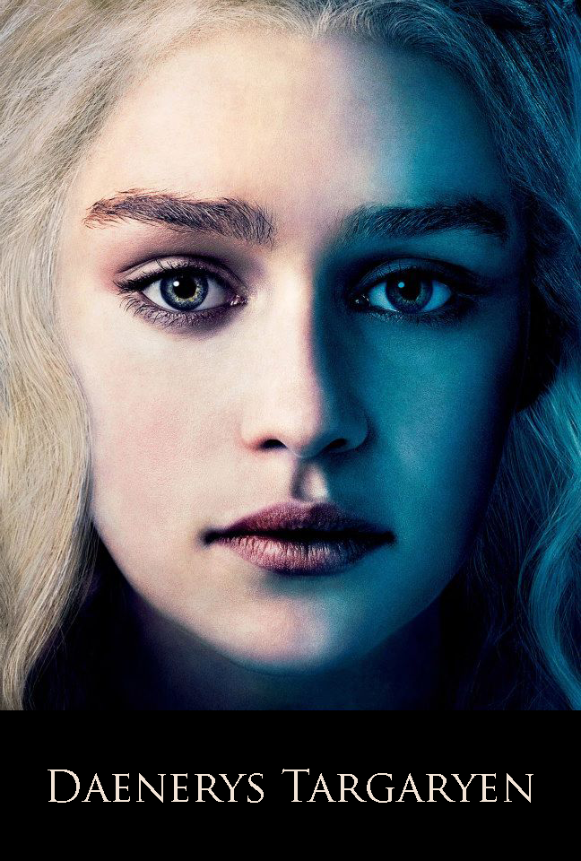

|

|
Daenerys Targaryen
Daenerys Targaryen, known as Daenerys Stormborn or Dany, is the last confirmed member of the ancient Targaryen Dynasty and one of the primary POV characters in the book series. In the TV series, Daenerys is played by Emilia Clarke.
Character and Appearance
Daenerys is a young woman in her early teens. She is short of stature and very beautiful, with the silver-blonde hair and purple eyes for which House Targaryen has always been known.[5] this collection of images.
In her youth, Dany was a meek, timid girl with little confidence or self-esteem. She knew no life other than one of exile, dependent and in constant fear of her brother Viserys. He was the only family she knew, but was often a cruel guardian, prone to mood swings and fits of violence.
Her marriage to Khal Drogo was a turning point for her; adapting to life in a Dothraki khalasar was difficult, but it allowed her to begin to achieve independence from her abusive brother, and she emerged from the experience as a strong, confident, courageous woman. Nevertheless, she has not forgotten what it was like to be a victimized child, and her experiences have left her with a compassion that is unusual in a would-be conqueror. She is determined to bring justice through her reign, and has made ending slavery a particular priority. Despite her strong moral compass, however, she is capable of dealing ruthlessly with her enemies.
It was often said that the Targaryen kings tended to be either madmen or brilliant rulers, and Daenerys seems to have inherited a natural gift for leadership as her birthright. Her followers generally regard her with great respect and love, and she is often compared to her deceased brother Rhaegar, a similarly charismatic leader who was known for his skill, determination, scholarly mind and strong sense of justice. Her primary weakness as a ruler is her youth and relative inexperience; however, she has a keen intellect and learns quickly from her mistakes.
Although she has matured enough to recognize that Viserys was weak, cowardly and cruel, his abiding obsession with regaining the crown he felt was his birthright has instilled in Daenerys a similar belief that reclaiming the Seven Kingdoms is both her right and her duty as the last of the Targaryens, and it remains the paramount goal of her life. Nevertheless, Westeros is a foreign land that she has never seen with her own eyes, and she sometimes longs wistfully for the house with a red door in Braavos that has come to symbolize her lost childhood.
History
Daenerys is the only daughter and youngest child of King Aerys II Targaryen and his sister-wife, Queen Rhaella. She was named after the first Daenerys in her family. Daenerys was conceived during the last month of the rebellion that would ultimately end her family's reign over the Seven Kingdoms. Shortly thereafter, her mother was sent with the young prince Viserys to the family ancestral seat of Dragonstone to escape the coming Sack of King's Landing. Daenerys was born while a great storm raged above Dragonstone, sinking what remained of the Targaryen fleet, for this reason she is sometimes known as "Daenerys Stormborn." Her mother died in labor.
By this time, the war was already lost. Robert Baratheon had claimed the throne and Aerys had already been killed along with the rest of the royal family, leaving Daenerys and her older brother Viserys as the only known living Targaryen heirs. The garrison at Dragonstone decided to surrender and turn them over to the rebels in exchange for their lives, but before they could act on this plan, Ser Willem Darry and several other loyal retainers rescued the children and smuggled them into exile, sailing to the Free City of Braavos, where they lived for years in a house with a red door. Ser Willem was old and sickly, but Dany remembers that he always treated her kindly. After his death, the servants drove the young Targaryens from the house. Dany wept as they were forced out.[5]
The Targaryen loyalists who raised the two children considered Viserys the rightful ruler of the Seven Kingdoms despite the family's defeat and exile, as did Viserys himself. He regarded it as his duty to revenge himself on the usurpers who murdered his family and reclaim the birthright that had been stolen from him when he was only a child. In the years that followed Ser Willem's death, Viserys wandered the nine Free Cities with his sister, trying to raise support to retake the Iron Throne, which earned him the mocking title of "The Beggar King."
As a result of this long humiliation, Viserys grew bitter and obsessed with his long-denied birthright. Dany was the only convenient target for his frustration, and over time he even came to blame her for their mother's death. He took pride in his lack of control of his own temper, regarding it as proof that he was a true heir to the Targaryen kings; he regularly warned Dany not to "wake the dragon" by angering him. He often spoke to her of the importance of preserving the purity of their royal bloodline through the ancient Valyrian practice of dynastic incest, so Dany grew up believing she would one day wed her brother. She was bright enough to realize that most of Viserys' plans for retaking the Seven Kingdoms were unrealistic, and as she had no memory of Westeros herself, his dream meant little to her; instead she longed to return to the house with the red door, which in her mind became a symbol for the childhood she had lost. With no family other than the abusive Viserys and no expectation of ever escaping his control, Dany grew into a fearful and docile young woman.
Viserys and Daenerys eventually found the help they sought in the Free City of Pentos, in the form of a rich and powerful magister, Illyrio Mopatis, who invited them to stay in his mansion and offered his help in reclaiming their throne.
|